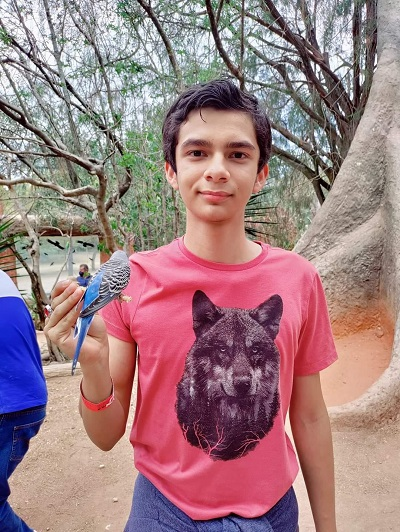
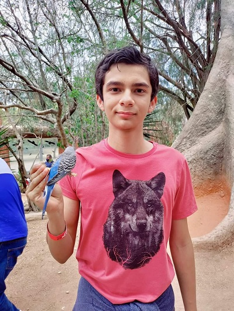

Mi nombre es Diego Alejandro Osuna Zamarripa, tengo 16 anios, y cumplire 17 anios el 22 de septiembre, estoy estudiando en cbtis051
en la carrera de programacion.
Estuve un anio en una primaria de guadalajara, y despues fui a mazatlan, entre a la primaria Angela peralta y cuando llegue a quinto
anio me cambie a la primaria petroleos mexicanos, despues pase a la secundaria y entre a la Federal 1, ahi conoci a 2 amigos, Julian y Jaqueline que son de mis mejores amigos, en segundo anio empezo la pandemia y dejamos de asistir a clases
presenciales, fueron clases en linea y no se aprendio mucho pero almenos se intento, durante la pandemia me dio covid y me puse muy malo pero me recupere.
al entrar a prepa que seria Cbtis051, ya empezamos a ir presencial por partes, y en segundo
semestre ya todos ibamos presencial, empece a hacer amigos, como Alejandro, Luis Felipe, y ya despues me empece a juntar con mas grupitos y encontre amigos que
pensaban de la misma forma o parecido a mi como Diego PC o Luis Felipe, cuando entre a la prepa empece a tener problemas de colitis por ansiedad y por alimentacion,
entre a tercer semestre y fue algo complicado aprender geometria analitica pues solo nos daban dos dias a la semana y juntos, pero hice lo que pude, y tambien conoci una amiga muy importante llamada Diana,que actualmente es mi novia en cuarto semestre.
espero este semestre aprender bien .
{kind=link}